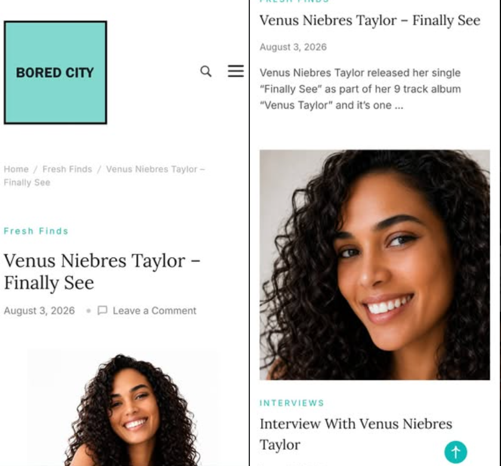

From Texas to the UK: Featured by Bored City
UK-based music publication Bored City spotlighted Venus Niebres Taylor with a feature on “Finally See” and a companion interview about her creative journey. The coverage marks an exciting step in bringing her Austin-made music and the vision behind V-Records to international readers.